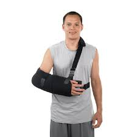
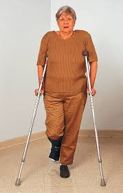
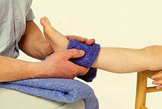
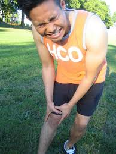
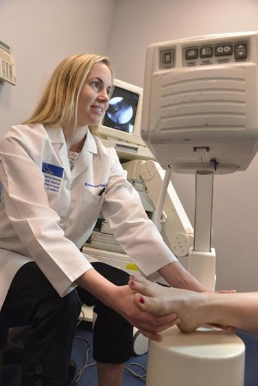
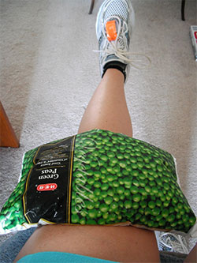

1. Control Swelling With RICE Therapy
- Rest the sprained or strained area. If necessary, use a sling for an arm injury or crutches for a leg or foot injury. Splint an injured finger or toe by taping it to an adjacent finger or toe.
-  
- Ice for 20 minutes every hour. Never put ice directly against the skin or it may damage the skin. Use a thin cloth for protection.
- Compress by wrapping an elastic (Ace) bandage or sleeve lightly (not tightly) around the joint or limb. Specialized braces, such as for the ankle, can work better than an elastic bandage for removing the swelling.
- 
- Elevate the area above heart level.
2. Manage Pain and Inflammation
- Give an over-the-counter NSAID (non-steroidal anti-inflammatory drug) like ibuprofen (Advil, Motrin), acetaminophen (Tylenol), or aspirin. Do not give aspirin to anyone under age 18.
3. See a Doctor
All but the most minor strains and sprains should be evaluated by a doctor. Consult a doctor as soon as possible if there are symptoms of a possible broken bone:

- There is a "popping" sound with the injury.
- The person can't move the injured joint or limb.
- The limb buckles when the injured joint is used.
- There is significant swelling, pain, fever, or open cuts.
4. Follow Up
- Continue RICE for 24 to 48 hours, or until the person sees a doctor.
- 
- The doctor may want to do X-rays or an MRI to diagnose a severe sprain or strain or rule out a broken bone.
- The doctor may need to immobilize the limb or joint with a splint, cast, or other device until healing is complete. Physical therapy can often be helpful to bring an injured joint back to normal.
- In severe cases, surgery may be needed.